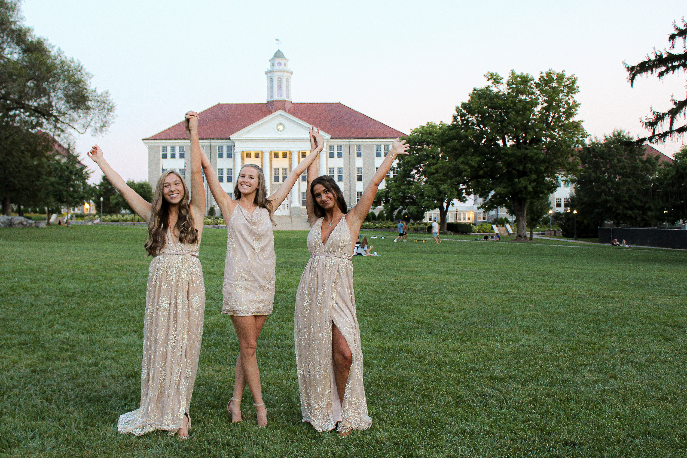
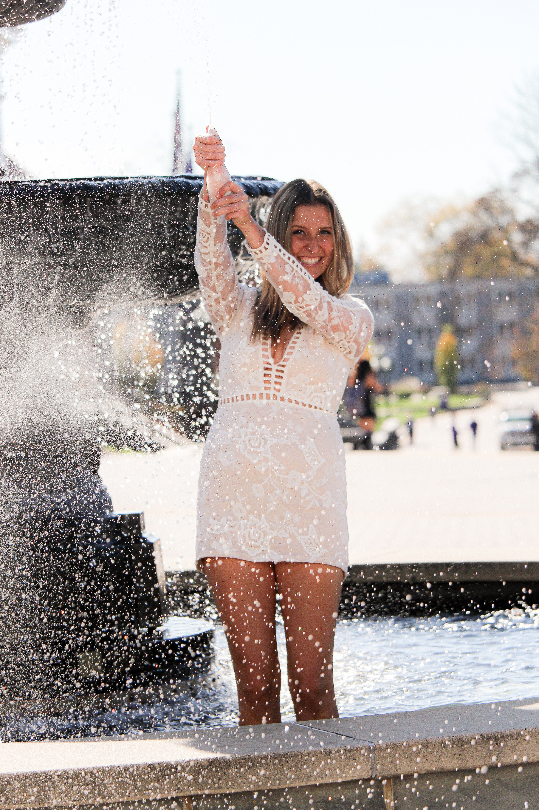

Graduation Portraits
In my time at JMU I have learned to love graduation photoshoots! They are vibrant, fun, and full of champaigne showers. Who doesn't love a good champaine shower image?? Hint Hint... my camera(: Anyway, here are my 4 favorite images below!


